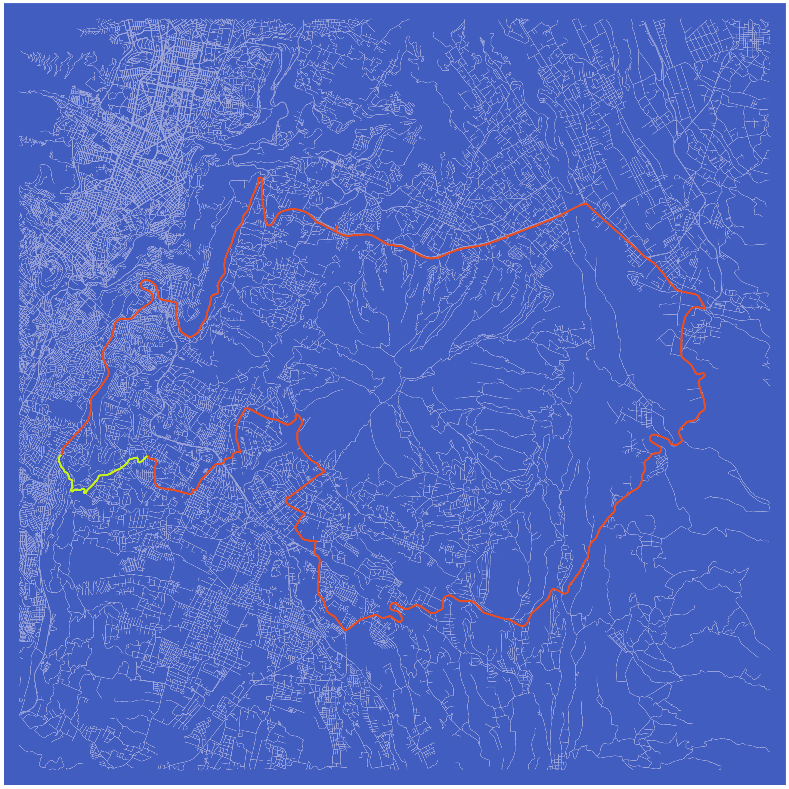
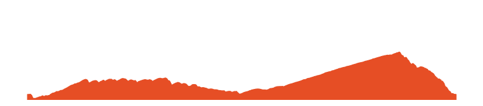
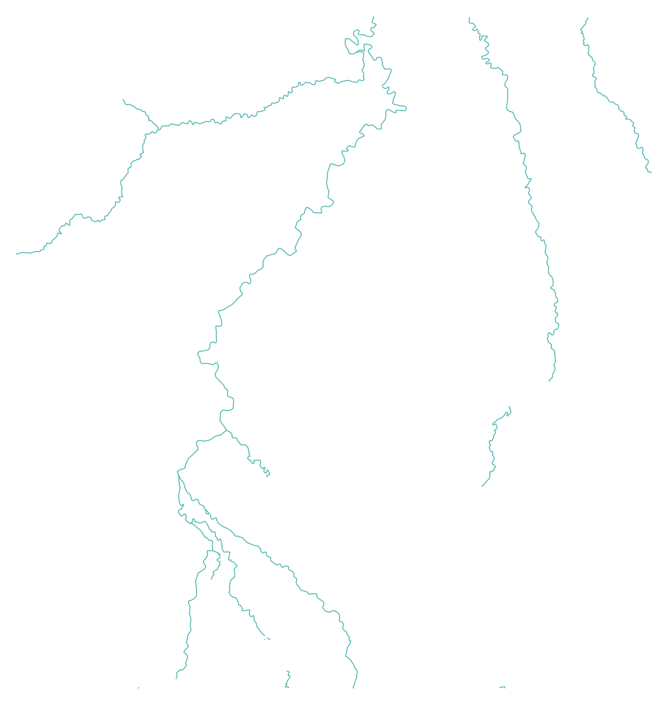
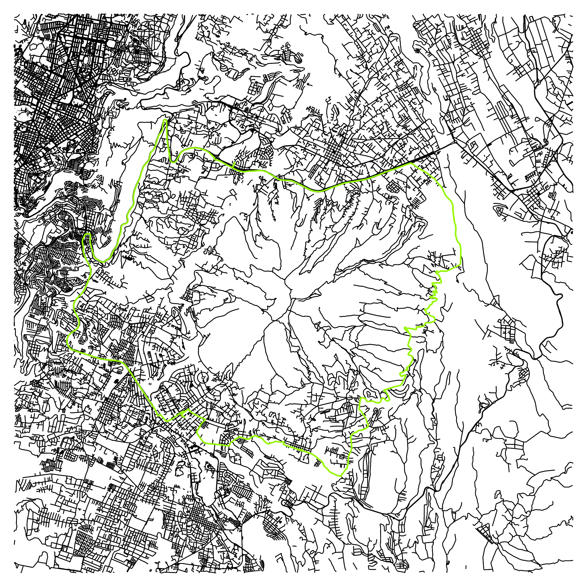

import osmnx as ox
import pandas as pd
import gpxpy
import gpxpy.gpx
import matplotlib.pyplot as plt
import polylinepath = "Princesa_Toa_.gpx"with open(path, 'r') as gpx_file:
gpx = gpxpy.parse(gpx_file)Extract latitude, longitude and elevation
# extract in gpx file latitude, longitude and elevation
route_info = [{'latitude': point.latitude,'longitude': point.longitude,'elevation': point.elevation}
for track in gpx.tracks
for segment in track.segments
for point in segment.points ]# route_df Dataframe
route_df = pd.DataFrame(route_info)
route_df.head()| latitude | longitude | elevation | |
|---|---|---|---|
| 0 | -0.216083 | -78.436892 | 2388.8 |
| 1 | -0.216085 | -78.436895 | 2388.8 |
| 2 | -0.216141 | -78.436849 | 2388.9 |
| 3 | -0.216161 | -78.436832 | 2388.9 |
| 4 | -0.216211 | -78.436803 | 2389.0 |
Center point for Graph in ox
# center point to extract graph latitude , longitude
center_point = (-0.26428048222240524, -78.4202862684383)Link osmnx graph_from_point fuction
https://osmnx.readthedocs.io/en/stable/osmnx.html?highlight=graph_from_point#osmnx.graph.graph_from_point
G = ox.graph_from_point(center_point, dist=12000, retain_all=True, simplify = False, network_type='all')
#bike allEdit edge linewiths
u = []
v = []
key = []
data = []
for uu, vv, kkey, ddata in G.edges(keys=True, data=True):
u.append(uu)
v.append(vv)
key.append(kkey)
data.append(ddata)# Lists to store colors and widths
roadColors = []
roadWidths = []
for item in data:
if "length" in item.keys():
if item["length"] <= 100:
linewidth = 0.10
color = "#a6a6a6"
elif item["length"] > 100 and item["length"] <= 200:
linewidth = 0.15
color = "#676767"
elif item["length"] > 200 and item["length"] <= 400:
linewidth = 0.25
color = "#454545"
elif item["length"] > 400 and item["length"] <= 800:
color = "#bdbdbd"
linewidth = 0.35
else:
color = "#d5d5d5"
linewidth = 0.45
if "primary" in item["highway"]:
linewidth = 0.5
color = "#ffff"
else:
color = "#a6a6a6"
linewidth = 0.10
roadColors.append(color)
roadWidths.append(linewidth)bgcolor = "#061529"for item in data:
if "footway" in item["highway"]:
color = "#ededed"
linewidth = 0.25
else:
color = "#a6a6a6"
linewidth = 0.5
roadWidths.append(linewidth)# -0.2152600339650004, -78.44036231831859Segment id lat long
def get_segment_lat_long(id_segment):
"""
Retrieves the latitude and longitude coordinates of a segment identified by the given id_segment.
Parameters:
id_segment (str): The ID of the segment
Returns:
pd.DataFrame: A DataFrame containing the latitude and longitude coordinates of the segment.
"""
# Read the segment data from the CSV file
segment_df = pd.read_csv("segmetos_by_id.csv")
# Filter the DataFrame to get the segment by id
segment_r = segment_df[segment_df["id"] == id_segment]
# Extract the polyline string from the DataFrame
string_data = segment_r['map'].values[0]
str_dict = eval(string_data)['polyline']
# Decode the polyline string into latitude and longitude coordinates
decode_cord = polyline.decode(str_dict)
# Create a DataFrame from the decoded coordinates
df = pd.DataFrame(decode_cord, columns=['latitude', 'longitude'])
return dfdf_segment = get_segment_lat_long(6593286)
#df_segment.head()ox.plot_graph funtion
https://osmnx.readthedocs.io/en/stable/osmnx.html?highlight=plot#osmnx.plot.plot_graph
#-0.21117724369894406, -78.36962748830953
#,bgcolor = bgcolor
#, edge_color=roadColors '#FFFFFF',
#edge_linewidth=roadWidths,
#edge_linewidth = roadWidths,fig, ax = ox.plot_graph(G, node_size=0,
figsize = (27, 40),
dpi = 300,
save = False,
bgcolor = "#415DC0",
edge_color = "#9DA5D9",
edge_alpha = 1 ,
show = False)
## Plot activity in graph
plt.plot( route_df['longitude'] , route_df['latitude'] ,
color = "#E64E25" ,
linewidth = 4.0)
## plot segmenr
plt.plot( df_segment['longitude'] , df_segment['latitude'] ,
color = "#C1F51F" ,
linewidth = 4.0)
## Plot activity in graph
plt.show()
fig.tight_layout(pad=0)
## path name to save
path_save = path.split(".")[0] + ".png"
fig.savefig( path_save, dpi=300, format="png", bbox_inches='tight',
facecolor=fig.get_facecolor(), transparent=False)
ELEVATION
elevation = route_df.elevation
x_plot = range(len(elevation))
min_elev = min(elevation) - 25# Set the figure size
fig, ax = plt.subplots(figsize=(10, 2))
# Area plot
ax.fill_between(x_plot, elevation, color="#E64E25")
# Set the minimum and maximum values for the y-axis
ax.set_ylim(min_elev, 4000)
plt.axis('off')
# Save the figure
path_save = path.split(".")[0] +"_elevation" ".png"
plt.savefig(path_save , transparent=True, bbox_inches='tight', pad_inches=0 )
# Display the plot
plt.show()
PLOT SEGMENT ELEVATION
df_segment.iloc[0]latitude -0.28212
longitude -78.49145
Name: 0, dtype: float64res = route_df.latitudeSeries([], Name: latitude, dtype: bool)import networkx as nx
import osmnx as ox
center_point = (-0.2579141152958376, -78.41762195372512)
G1 = ox.graph_from_point(center_point, dist=10000, dist_type='bbox', network_type='all',
simplify=True, retain_all=True, truncate_by_edge=False,
clean_periphery=False, custom_filter='["natural"~"water"]')
G2 = ox.graph_from_point(center_point, dist=10000, dist_type='bbox', network_type='all',
simplify=True, retain_all=True, truncate_by_edge=False,
clean_periphery=False, custom_filter='["waterway"~"river"]')
Gwater = nx.compose(G1, G2 )C:\Users\meagu\anaconda3\envs\ox\lib\site-packages\osmnx\graph.py:488: UserWarning: the graph-level street_count attribute will likely be inaccurate when you set clean_periphery=False
warnings.warn(msg)
C:\Users\meagu\anaconda3\envs\ox\lib\site-packages\osmnx\graph.py:488: UserWarning: the graph-level street_count attribute will likely be inaccurate when you set clean_periphery=False
warnings.warn(msg)u = []
v = []
key = []
data = []
for uu, vv, kkey, ddata in Gwater.edges(keys=True, data=True):
u.append(uu)
v.append(vv)
key.append(kkey)
data.append(ddata) g3 = nx.union(G, Gwater )u = []
v = []
key = []
data = []
for uu, vv, kkey, ddata in g3.edges(keys=True, data=True):
u.append(uu)
v.append(vv)
key.append(kkey)
data.append(ddata) import pandas as pddf = pd.DataFrame.from_records(data)td = df["Rio".isin(df["name"])]AttributeError: 'str' object has no attribute 'isin'fig, ax = ox.plot_graph(Gwater, node_size=0,
figsize = (27, 40),
dpi = 300,
save = False,
bgcolor = "#FFFFFF",
edge_color = "#5BBCB5",
edge_alpha = 1 ,
show = False,
edge_linewidth = 2.0
)
## Plot activity in graph
plt.plot( route_df['longitude'] , route_df['latitude'] ,
color = '#95F701' ,
linewidth = 4.0)
plt.show()
fig.tight_layout(pad=0)
## path name to save
path_save = path.split(".")[0] + ".png"
fig.savefig("cayambe.png", dpi=300, format="png", bbox_inches='tight',
facecolor=fig.get_facecolor(), transparent=False)
